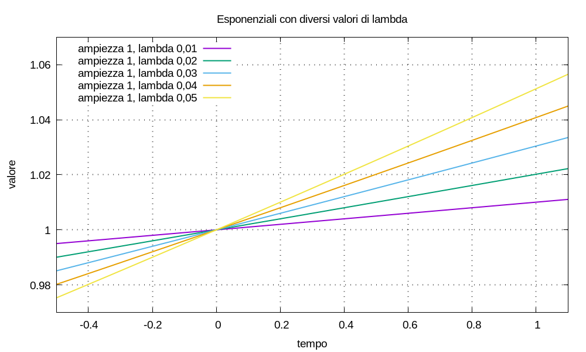
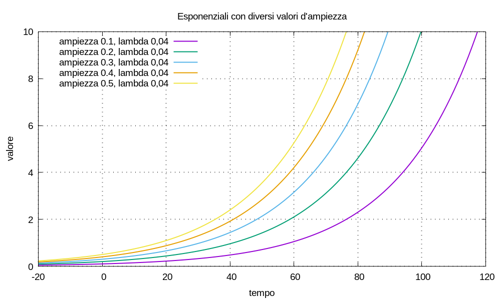
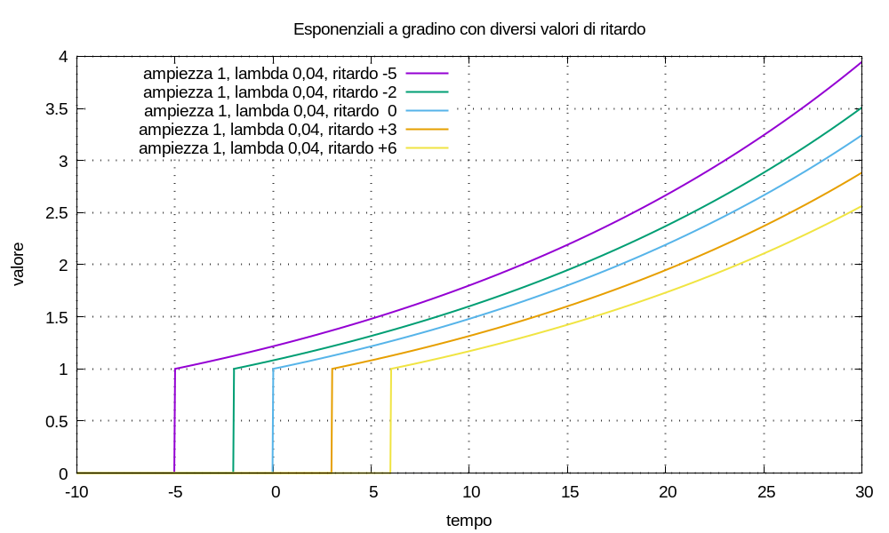

C’interessano funzioni esponenziali del tipo:
U(t) = C eλt = C esp(λ t)
in cui: e ≈ 2.718281828459045 è la base dei logaritmi naturali; l’ampiezza C e la costante λ sono numeri reali; la variabile t rappresenta il tempo.


Piú particolarmente, indicato il gradino di Heaviside con u(t), c’interessano le funzioni:
U(t) = C u(t - t0) esp[λ(t - t0)]
in cui l’esponenziale a gradino ha un ritardo nel tempo pari alla costante t0.

Ci occorre ragionare sui limiti da sinistra e da destra di alcune funzioni esponenziali nell’istante in cui capita il gradino; adottiamo la notazione U(t0-) per indicare il limite per t → t0 da sinistra e la notazione U(t0+) per indicare il limite per t → t0 da destra.
Definiamo il gradino di Heaviside in modo che u(0) = 1, allora u(0-) = 0 e u(0+) = 1; di conseguenza, per la funzione esponenziale risulta:
U(t0-) = C u(t0-) esp(λ t0) = 0
U(t0+) = C u(t0+) esp(λ t0) = C esp(λ t0) = U(t0)
Il caso che c’interessa di piú è quello di funzioni del tipo:
U(t) = C u(t - t0) esp[λ(t - t0)] - {C esp[λ(t1 - t0)]} u(t - t1) esp[λ(t - t1)]
con t0 < t1, che valutate in t1 risultano, essendo i gradini di Heaviside pari a uno:
U(t1) = C esp[λ(t1 - t0)] - C esp[λ(t1 - t0)] esp[λ(t1 - t1)] = 0
ma se prendiamo il limite per t → t0 da sinistra: il secondo gradino di Heaviside è nullo; quindi:
U(t1-) = C esp[λ(t1 - t0)]
Osservazione Per l’equazioni e gli esempi di questo scritto, quando usiamo un software di calcolo numerico: per calcolare il limite da sinistra è sufficiente sottrarre una quantità relativamente piccola dalla variabile indipendente; per esempio:
U(t-) = U(t - 10-6)